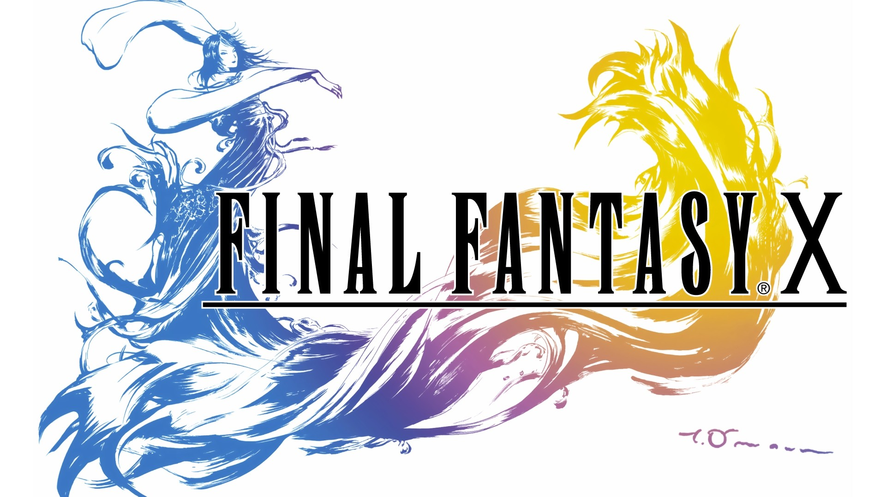
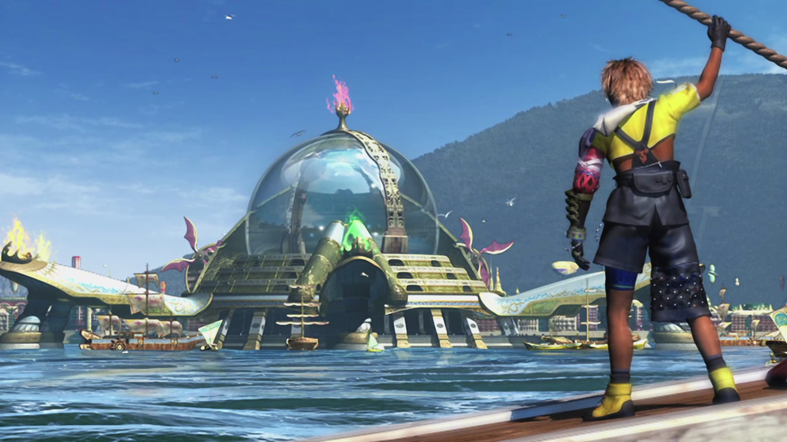
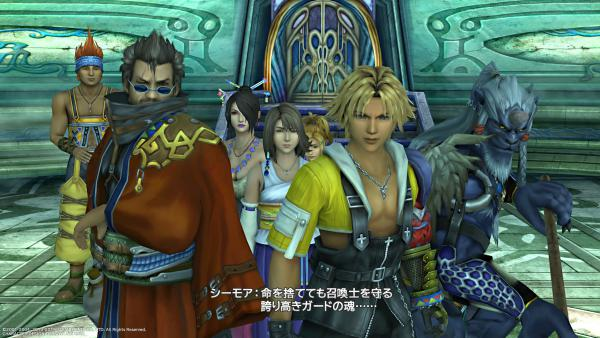
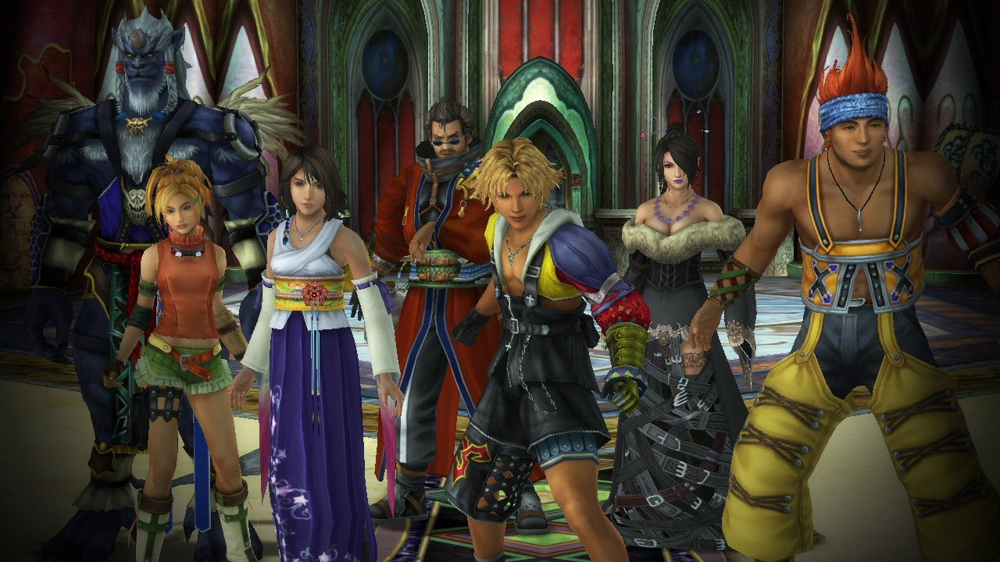
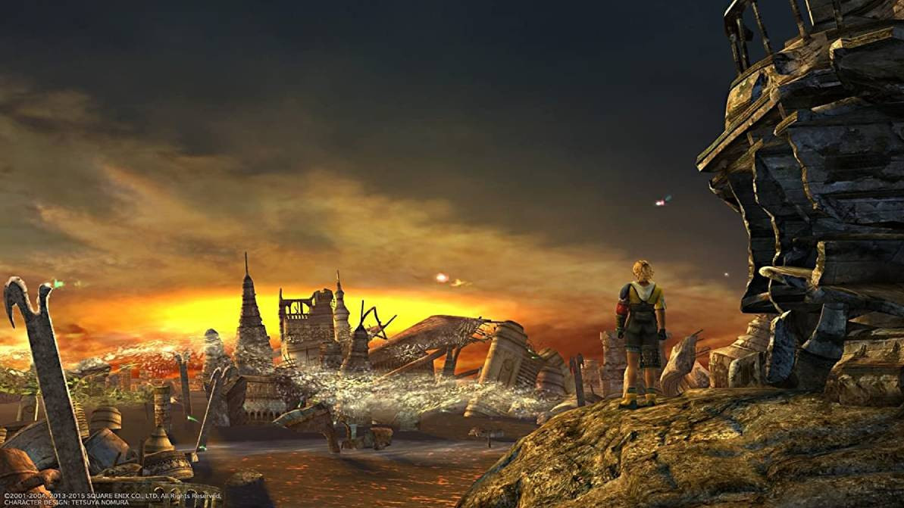
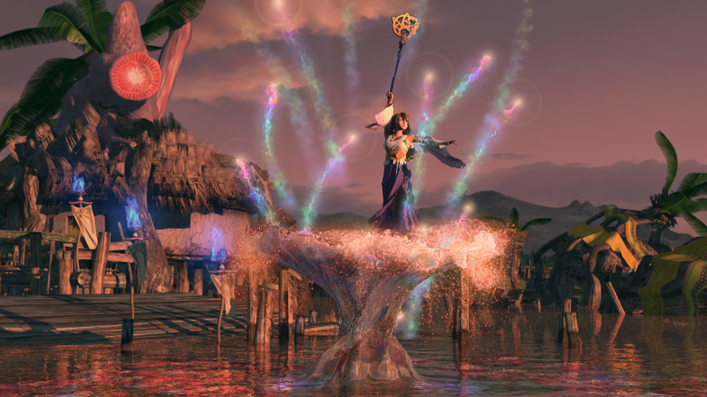
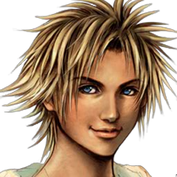
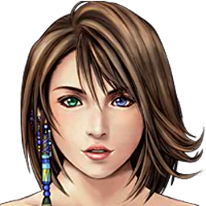
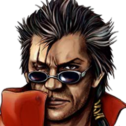
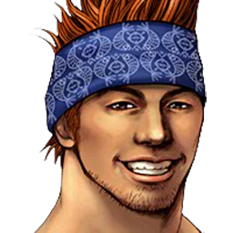

Galeria




Personajes

Tidus
Tidus es un joven de 17 años, el mejor jugador de blitzbol de los Zanarkand Abes, deporte y equipo en el que tiene un gran futuro.

Yuna
Yuna tiene el pelo castaño, la piel pálida y sufre heterocromía, ya que sus ojos son de diferente color: Uno azul y el otro verde.

Auron
Es considerado "el mejor guardián de todos", que derrumbó a Sinh con Braska, el padre de Yuna y con Jecht, padre de Tidus.

Wakka
Wakka era un joven de 23 años, capitán del equipo Besaid Aurochs, pero decidió retirarse para dedicarse a ser guardián de Yuna.
Historia
Tidus era un joven jugador de blitzball. Era la estrella de su equipo, los Zanarkand Abes, que era el mejor equipo de Zanarkand.
Los hechos del juego empiezan el día en que Tidus va a jugar un partido contra los Zanarkand Duggles. Ese día, se disputa el primer puesto de "La Copa Jecht", el torneo más importante de la ciudad que, además, lleva el nombre del padre de Tidus: Jecht, el mejor jugador de todos los tiempos. Tidus detestaba a su padre, porque siempre le corregía en todo, le insultaba y bebía. También era porque, cuando él era pequeño, cuando aparecía Jecht su madre le ignoraba. Sólo tenía ojos para su padre. Y Tidus le tenía rencor. Entonces, un día Jecht fue a entrenar al mar y desapareció. Y con ello, su madre perdió las ganas de vivir y murió. Por todo eso, Tidus odio profundamente a su padre, o "viejo" como se le refiere durante la trama.
Mientras juegan, el estadio explota, y todo el mundo sale corriendo. Mientras huye, Tidus ve a Auron, que era un amigo de su padre que empezó a cuidar de él cuando éste desapareció. Auron le entrega una espada en nombre de su padre, y empiezan a luchar contra unos extraños bichos que se desprenden de un monstruo enorme: Sinh.
Tras una larga lucha, Auron lleva a Tidus hasta Sinh, y el monstruo les engulle.
Cuando Tidus despierta, se encuentra completamente sólo en Spira, más concretamente en unas ruinas desconocidas: las Ruinas del Templo de Baaj. Fue a explorar y se cayó al agua por un puente que se derrumbó. Entonces se tiene que enfrentar a un enorme monstruo guardián Josguein y pierde el conocimiento. Se despierta dentro de un edificio en ruinas y, como tiene frío, decide ir a buscar algo para hacer fuego. Hace en el centro una hoguera con unas flores secas, pero con la mala suerte de nuestro protagonista, esta hoguera atrae a un monstruo que le ataca.
Mientras lucha, aparecen unos misteriosos personajes liderados por una chica. La joven ayuda a Tidus a deshacerse del monstruo, y luego se pone a hablar con sus compañeros en una extraña lengua. Los chicos intentan matar a Tidus, pero ella lo impide y lo deja inconsciente, dándole un puñetazo en el estómago.
Cuando recupera el conocimiento, Tidus, se encuentra en el barco Zalvage con los desconocidos. Los extraños le ofrecen a Tidus cobijo, a cambio de que éste les ayude a explorar un barco que han encontrado en el fondo del mar. Pero como Tidus no hablaba el idioma de los demás, la chica empezó a traducirle. Tidus aceptó el trato, y después de hacer lo que le pidieron (enfrentándose a otro monstruo terrible, cómo no), la misteriosa chica y él mantuvieron una conversación: la joven enmascarada se llama Rikku y todos ellos son Albhed.
Tidus le cuenta lo que le pasó en Zanarkand, y ella dice que Zanarkand son ruinas desde mil años atrás. Tidus queda muy sorprendido, y Rikku le dice que es una ciudad sagrada. Además, le comenta que si le dice a alguien de dónde es puede armar un buen lío. Nada más decirle esto, aparece Sinh y Tidus cae del barco, y así se separa de Rikku.
Tidus vuelve a perder el conocimiento, y cuando despierta, está en el mar de una soleada isla: la Isla Besaid. Allí, mientras flota en el agua, un balón de blitzball le golpea, y él se lo devuelve a sus dueños (que están en la playa) con un chut impresionante. Los dueños del balón, eran un equipo: los Besaid Aurochs, y por suerte para Tidus, el capitán del equipo le ve y le ficha. El capitán, es Wakka, un joven que le dice a Tidus lo mismo sobre Zanarkand: que son ruinas y que es una ciudad sagrada para la religión y el Dogma de Yevon.
Tras esto, le lleva a rezar para que se cure, porque según Wakka, que diga que es de Zanarkand, son delirios porque ha estado cerca de Sinh y tiene su toxina. Llegan al templo, y Tidus empieza a ver que Spira es muy diferente a su ciudad natal: son muy religiosos, no utilizan máquinas... Aunque lo que más le llama la atención es la religión y su Dogma, entonces le pregunta a Wakka que qué es. Por lo visto el Dogma es una serie de normas que el Clero le impone a la gente de Spira para que no peque, y así, Sinh desaparecerá y volverá a renacer.
Tidus se entera de lo que son los invocadores, y también se entera de que hay una desde hace horas en la Cámara del Orador, lo cual es peligroso. Entonces, Tidus irrumpe en la cámara, a pesar de que está prohibido, y conoce a la invocadora y a sus guardianes: Yuna, Lulu y Kimahri, respetivamente, además Wakka también es su guardián .
Yuna no es como Tidus esperaba: el esperaba a una "vieja", y Yuna, tenía en realidad la misma edad que Tidus, 17 años. Empiezan a hablar y entablan amistad, y antes de despedirse, Yuna comenta que irán en el mismo barco: Tidus va con Wakka al campeonato de Blitzball y Yuna empieza su peregrinaje.
Mientras hablan en el barco, Yuna le comenta a Tidus que ella cree que él es de Zanarkand, porque uno de los guardianes de su padre también lo era: Jecht. Tidus dice que su padre se llama Jecht, y la fecha con la desaparición de éste, y con su llegada a Spira coinciden. Los dos se quedan sorprendidos por la coincidencia, y entonces llega Sinh y ataca al barco.
Tras el ataque todo el mundo está a salvo, pero Sinh ha destrozado la isla de Kilika. El grupo hace un alto en esta isla para que Yuna consiga un eón en su templo y, de paso, aprovechan para que haga un envío, para que los fallecidos puedan descansar en paz. Rezan en el templo, consiguen un eón, y ponen rumbo a Luca, ciudad donde se va a disputar "La Copa Yevon", el torneo de blitzball más importante del momento.
Al ser un acontecimiento tan importante, van celebridades de toda Spira, entre ellas el jefe de Spira, el venerable Yo Mika, el cual presenta a un nuevo personaje: Seymour Guado, un guado que se acaba de convertir en uno de los venerables. Ganan el torneo, pero con dificultades, ya que los Albhed raptaron a Yuna mientras jugaban, y tuvieron que rescatarla.
Lo curioso, es que durante el torneo, aparece Auron, y habla con Tidus. Éste le explica que Jecht, es Sinh, y que quiere Tidus le mate. Tidus se queda en sin palabras, y decide acompañar a Auron (que pide a Yuna ser su guardián) para matar a Sinh.
Siguen su camino sin complicaciones, hasta que llegan a la Senda de las Rocas Hongo, donde se va a producir una batalla contra Sinh: la Operación Mi'ihen. El caso es que no les dejan pasar, y como Yuna debe seguir su peregrinaje, Seymour intiviene para que les dejen pasar, y les invita a ver la batalla.
La batalla resulta ser un desastre, y mueren prácticamente todos los Legionarios. Algo abatidos, siguen adelante, y se dirigen al Río de la Luna.
Una vez en el río, deciden tomar un shupaf, que les lleva a Guadosalam (hogar de los Guado) y Seymour, les invita a cenar. En la visita, éste le pide a Yuna que se case con él, y ella que piensa que casarse alegrará a la gente de Spira, decide pensárselo en el Etéreo, donde viven los muertos.
Allí, medita mientras ve a los espíritus de sus padres, y cuando se van aparece el espíritu de Jyscal que le da una esfera a Yuna. Van en busca de Seymour, que está en el templo de Macalania, y en el camino, Yuna ve el contenido de la esfera, que la desvela que el asesino de Jyscal, ha sido el propio Seymour.
Yuna decide enfrentarse a Seymour sola, pero los demás intervienen, y le derrotan, pero no le envían al Etéreo. Tras esto, son calificados de traidores a Yevon.
Más tarde Yuna desaparece, y los demás aparecen en la isla Bikanel, hogar de los Albhed, los que supuestamente habían "raptado" a Yuna, para salvarla de su muerte acabando con su peregrinaje. Pero no estaba en Bikanel, estaba en Bevelle, a puento de casarse con Seymour, contra su voluntad.
El grupo la rescata y siguen adelante, al llegar al Monte Gagazet, los ronso la impiden el paso por ser una traidora, pero al final la dejan pasar y la protegen de Seymour, que va en busca de Yuna para ser su orador, para poder convertirse en Sinh.
Le derrotan de nuevo, y, finalmente, llegan a Zanarkand. Es allí, dónde Yunalesca le explica a Yuna que debe elegir a un orador, para que pueda luchar contra Sinh, y en adición, le explica que éste es eterno, y que revivirá siempre, aunque sea derrotado.
Yuna, conmocionada por la noticia, decide no sacrificarse y se enfrenta a Yunalesca, junto a sus compañeros. Al final, después de mucho esfuerzo, dan fin con ella, y buscan una manera para derrotar a Sinh para siempre. Para esto, visitan al orador de Bevelle, y, es él, el que les cuenta que Sinh es una mera "coraza" que usa para protegerse Yu Yevon.
Después de pensarlo, se dan cuenta de que Sinh se calma con el Himno de Yevon (Himn of the Fayth). Así que piden ayuda y mandan a una sacerdotisa que vaya predicándole a la gente que "cuando un barco volador cante el Himno de Yevon, cantad con él. Entonces, todos le atacan cuando está calmado, y así, se meten en el interior del monstruo.
Ya en el interior de éste, se encuentran otra vez con Seymour, que ha enloquecido completamente, y le derrotan por cuarta y última vez, ya que en ésta le envían al etéreo. Tras una pequeña búsqueda, encuentran a Jecht, al que han de derrotar para llegar hasta Yevon.